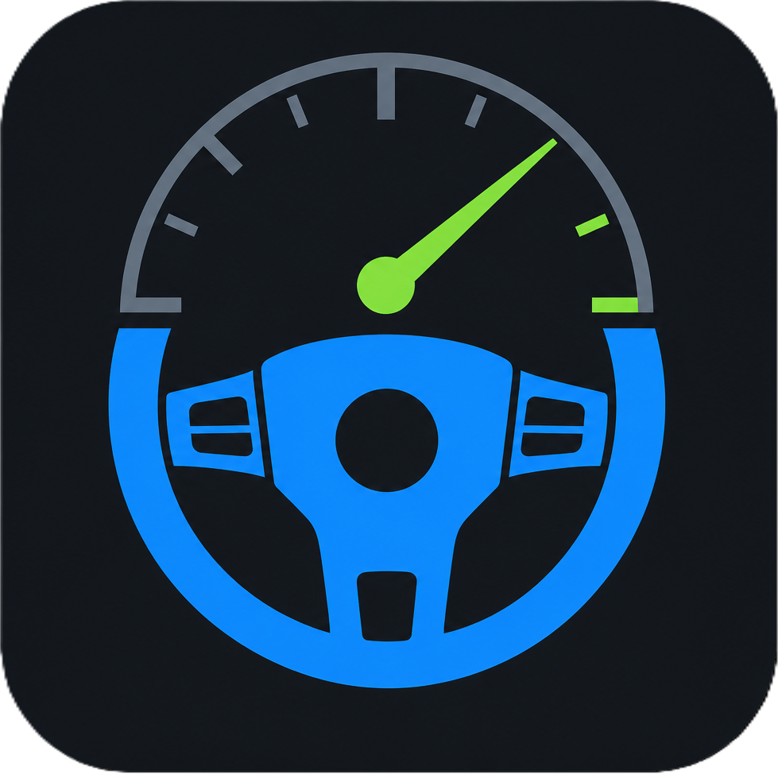
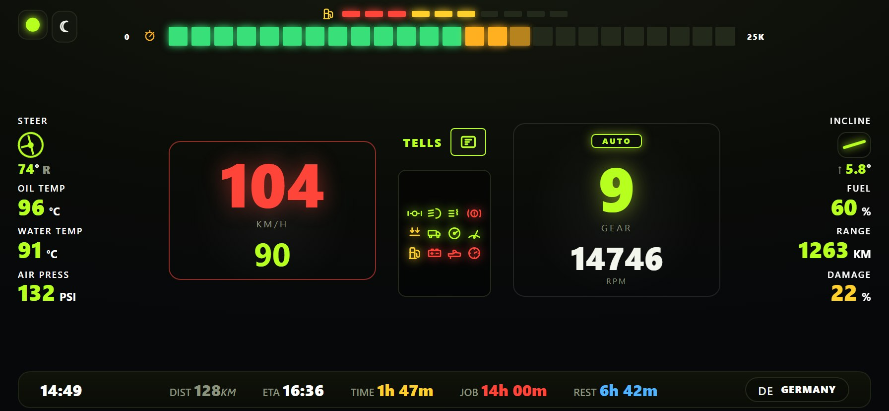
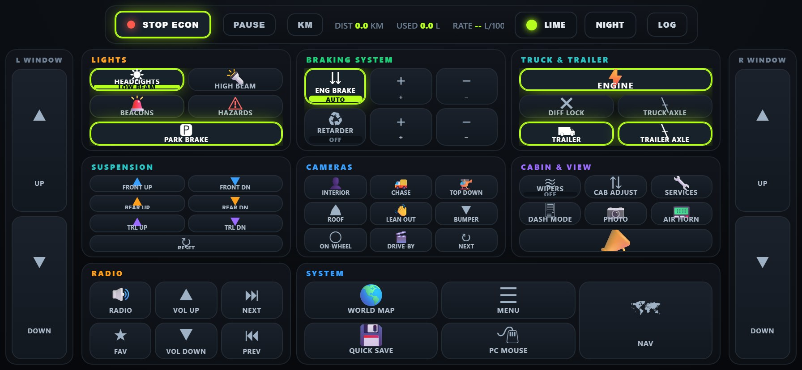
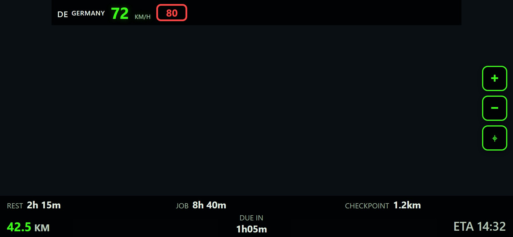
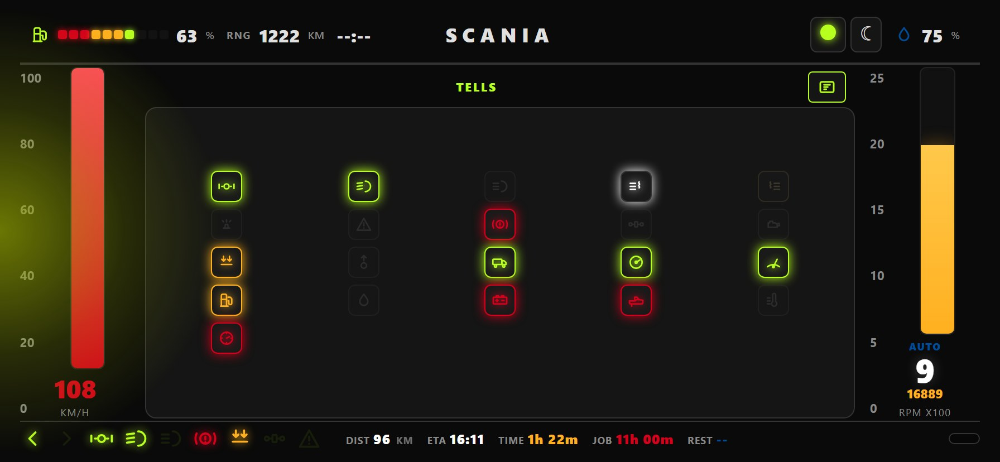

Live telemetry
Speed, RPM, fuel, job data, and RenCloud extras — hazard lights, diff lock, route distance — pushed in real time while you drive.

TruckDeck Dashboard| Server IP: | |
|---|---|
| Status: | Connecting... |
DISPATCH · TRUCKDECK %TRUCKDECK_VERSION%
TruckDeck streams live ETS2 & ATS telemetry to dashboards on your phone, tablet, or second monitor. OEM-style clusters, command decks, turn-by-turn NAV, and classic Funbit skins — all from one server running on your PC.




Speed, RPM, fuel, job data, and RenCloud extras — hazard lights, diff lock, route distance — pushed in real time while you drive.
Big Rig Cluster, Trucker’s Command Deck, and brand dashboards for Volvo, Scania, Mercedes, MAN, DAF, and Renault. Pick a skin and roll.
PMTiles world maps, in-dash routing, and guidance tuned for trucking. Generate maps from the TruckDeck desktop app, then pair with the NAV mod to mirror GPS into your cabin.
Map buttons on your dashboard to in-game actions — lights, wipers, cruise — without alt-tabbing out of the cab.
TruckDeck is combined work built on years of community telemetry dashboards, server code, and in-game plugins. Thank you to everyone below.
Skin authors are also credited on each dashboard card. Original Funbit skins are preserved under skins/FUNBITskins/.